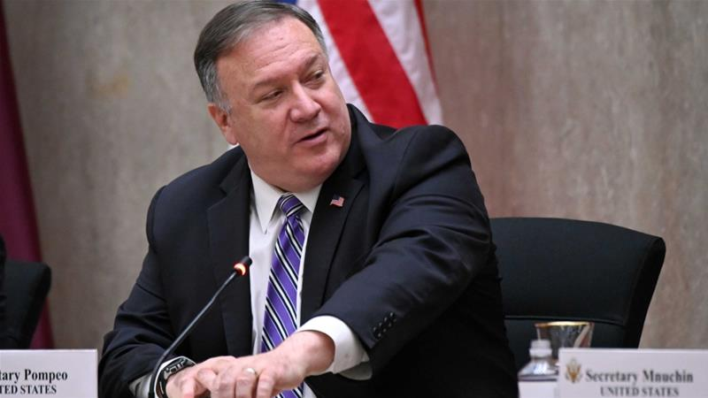
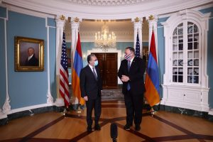
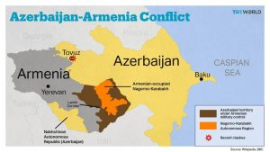

US Pressure on Azerbaijan and Armenia to Stop Fighting in Karabakh

In separate meetings with his Azeri and Armenian counterparts, US Secretary of State Mike Pompeo called for an end to the war in Nagorno-Karabakh.Azerbaijan has stated that it is ready to resume political talks after the occupation of Nagorno-Karabakh by Armenia.
US Secretary of State Mike Pompeo called for an end to the war in the Nagorno-Karabakh region in separate meetings with Azerbaijani Foreign Minister Jihon Bayramov and Armenian Foreign Minister Zahrab Manatsakanyan on Saturday.
After talks and consultations with his Azeri and Armenian counterparts in Washington, Pompeo called on both sides to protect their civilians while ending the violence.Earlier, the foreign ministers of Armenia and Azerbaijan had rejected the trilateral meeting.
Jeyhun Bayramov called for an end to the occupation of Karabakh by Armenia.He stated that if the occupation of Nagorno-Karabakh ends, Azerbaijan is ready to find a political solution to the conflict and resume basic talks immediately.
Bayramov stressed that according to four UN Security Council resolutions, Azerbaijan has a right to the Nagorno-Karabakh conflict and the international community supports its legal demands.
Manatsakanyan accused Azerbaijan of deliberately attacking its civilian targets.He said Turkey was also directly involved in 'these aggressive attacks by Azerbaijan.'
On the eve of his meeting, Pompeo announced that he did not expect much from his talks with his Armenian and Azeri counterparts.He noted that the agreement on the previous ceasefire had not been implemented.The Secretary of State spoke of a 'complex diplomatic situation.'
Continue the War and Negotiate
At the height of the conflict in Nagorno-Karabakh, the leaders of the United States, Russia, and France, who also lead the Minsk Group, called for an immediate and comprehensive ceasefire in the Nagorno-Karabakh region.
Azerbaijan and Armenia have twice agreed on a ceasefire to collect bodies and exchange prisoners of war, but this ceasefire has not been observed.Minsk Group leaders are now stepping up their efforts to find a political solution.
The Minsk Group was established in 1992 by the Organization for Security and Co-operation in Europe to find a peaceful solution to the Nagorno-Karabakh crisis.Russia, France, and the United States co-chair the Minsk Group.
In addition, Belarus, Germany, Italy, Portugal, the Netherlands, Sweden, Finland, Turkey, as well as Armenia, and the Republic of Azerbaijan are members of the Minsk Group.
The Minsk Group has not been able to establish lasting peace in the Nagorno-Karabakh region for nearly three decades, and the fire of war flared up again in late September.
Disagreement Over the Presence of Terrorists
As fighting continues in Nagorno-Karabakh, concerns about the presence of foreign and Syrian forces on the battlefield have increased.
Armenia has repeatedly claimed that 'jihadist terrorists' who entered the Nagorno-Karabakh war through Turkey are fighting alongside the Azerbaijani army.Azerbaijan, on the other hand, claims that Armenian ' terrorist forces' have infiltrated Nagorno-Karabakh from Syria, Lebanon, and Greece.
The Republic of Azerbaijan recalled its ambassador from Athens due to the deployment of some Greek and Armenian forces to Karabakh.
The Russian and French security services had previously announced the presence of 'terrorists' in Nagorno-Karabakh.France announced that 300 'Syrian terrorists' had been sent to Karabakh via Turkey.
The Republic of Azerbaijan asked France to either provide evidence or apologize to Azerbaijan.The German News Agency recently quoted regional expert Dmitry Ternin as saying that there was no evidence of the presence of 'terrorist groups' in Nagorno-Karabakh.
[bsa_pro_ad_space id=4]
Share on Facebook Tweet Follow us
Posted On: 2020-10-24T00:00:00
Posted By: Doris Mkwaya





Content Date: 2020-10-24
Download Date: 2021-07-09
Document ID: L0C04EIVW